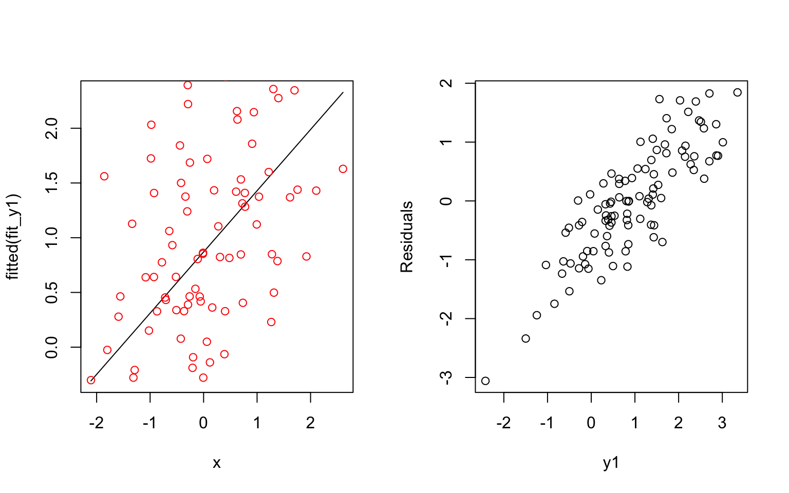
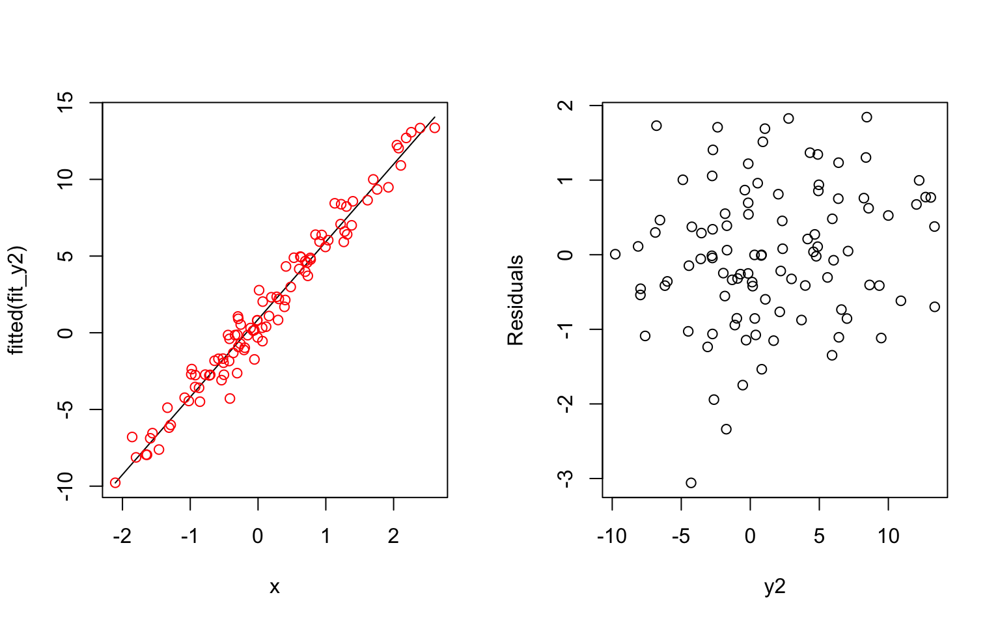

Biostatistics Method Homework
Junxian Chen (jc5314)
11/12/2019
Problem 1
- Write the Least Squares line equation and show that it always goes through the point (\(\bar{X}, \bar{Y}\)).
Least Squares line equation:
\[\begin{aligned} Y_{i} &= \hat{\beta}_{0} + \hat{\beta}_{1} X_{i} \\ &= (\overline{Y}-\hat{\beta}_{1} \overline{X}) + \hat{\beta}_{1} X_{i} \\ &= (\overline{Y}-\frac{\sum_{i=1}^{n} X_{i} Y_{i}-n \overline{X Y}}{\sum_{i=1}^{n} X_{i}^{2}-n \bar{X}^{2}} \overline{X}) + \frac{\sum_{i=1}^{n} X_{i} Y_{i}-n \overline{X Y}}{\sum_{i=1}^{n} X_{i}^{2}-n \bar{X}^{2}} X_{i} \end{aligned}\]
Plug \(X_{i} = \overline{X}\) into the equation, we can get:
\[\begin{aligned} (\overline{Y}-\frac{\sum_{i=1}^{n} X_{i} Y_{i}-n \overline{X Y}}{\sum_{i=1}^{n} X_{i}^{2}-n \bar{X}^{2}} \overline{X}) + \frac{\sum_{i=1}^{n} X_{i} Y_{i}-n \overline{X Y}}{\sum_{i=1}^{n} X_{i}^{2}-n \bar{X}^{2}} X_{i} &= (\overline{Y}-\frac{\sum_{i=1}^{n} X_{i} Y_{i}-n \overline{X Y}}{\sum_{i=1}^{n} X_{i}^{2}-n \bar{X}^{2}} \overline{X}) + \frac{\sum_{i=1}^{n} X_{i} Y_{i}-n \overline{X Y}}{\sum_{i=1}^{n} X_{i}^{2}-n \bar{X}^{2}} \overline{X} \\ &= \overline{Y} - 0 \\ &= \overline{Y} \end{aligned}\]
Thus, the Least Squares line always goes through the point (\(\overline{X},\overline{Y}\)).
- Show that \(corr(e_i, \hat{Y}_{i}) = 0\).
STEP 1: Proof of \(\sum_{i=1}^{n} e_{i} X_{i}=0\):
Firstly, we have \[\begin{aligned} \sum_{i=1}^{n} e_{i} X_{i}&=\sum_{i=1}^{n}\left(Y_{i}-\hat{\beta}_{0}-\hat{\beta}_{1} X_{i}\right)\left(X_{i}\right) \\ &=\sum_{i=1}^{n}\left(Y_{i}-\left(\bar{Y}-\hat{\beta}_{1} \bar{X}\right)-\hat{\beta}_{1} X_{i}\right)\left(X_{i}\right) \\ &=\sum_{i=1}^{n}\left(Y_{i}-\bar{Y}+\hat{\beta}_{1} \bar{X}-\hat{\beta}_{1} X_{i}\right)\left(X_{i}\right) \\ &=\sum_{i=1}^{n}\left(Y_{i}-\bar{Y}\right)\left(X_{i}\right)+\hat{\beta}_{1} \sum_{i=1}^{n}\left(\bar{X}-X_{i}\right)\left(X_{i}\right) \end{aligned}\]
Replace \(\bar{X}\) and \(\bar{Y}\) by
\[\begin{aligned} \bar{Y}=\frac{\sum_{i=1}^{n} Y_{i}}{n} \\ \bar{X}=\frac{\sum_{i=1}^{n} X_{i}}{n} \end{aligned}\]
Then, we get \[\begin{aligned} \sum_{i=1}^{n} e_{i} X_{i}&=\sum_{i=1}^{n}\left(Y_{i}-\frac{\sum_{i=1}^{n} Y_{i}}{n}\right)\left(X_{i}\right)+\hat{\beta}_{1} \sum_{i=1}^{n}\left(\frac{\sum_{i=1}^{n} X_{i}}{n}-X_{i}\right)\left(X_{i}\right) \\ &= \sum_{i=1}^{n} X_{i} Y_{i}-\frac{\sum_{i=1}^{n} Y_{i} \sum_{i=1}^{n} X_{i}}{n} + \hat{\beta}_{1}\left(\frac{\left(\sum_{i=1}^{n} X_{i}\right)^{2}-n \sum_{i=1}^{n} X_{i}^{2}}{n}\right) \\ &= \frac{n \sum_{i=1}^{n} X_{i} Y_{i}-\sum_{i=1}^{n} Y_{i} \sum_{i=1}^{n} X_{i}}{n}+\hat{\beta}_{1} \frac{\left(\sum_{i=1}^{n} X_{i}\right)^{2}-n \sum_{i=1}^{n} X_{i}^{2}}{n} \end{aligned}\]
Replace \(\hat{\beta}_{1}\) by the estimated result in LSE \[\begin{aligned} \hat{\beta}_{1}=\frac{n \sum_{i=1}^{n} X_{i} Y_{i}-\sum_{i=1}^{n} X_{i} \sum_{i=1}^{n} Y_{i}}{n \sum_{i=1}^{n} X_{i}^{2}-\left(\sum_{i=1}^{n} X_{i}\right)^{2}} \end{aligned}\]
Then, we get \[\begin{aligned} \sum_{i=1}^{n} e_{i} X_{i}&=\frac{n \sum_{i=1}^{n} X_{i} Y_{i}-\sum_{i=1}^{n} Y_{i} \sum_{i=1}^{n} X_{i}}{n} +\frac{n \sum_{i=1}^{n} X_{i} Y_{i}-\sum_{i=1}^{n} X_{i} \sum_{i=1}^{n} Y_{i}}{n \sum_{i=1}^{n} X_{i}^{2}-\left(\sum_{i=1}^{n} X_{i}\right)^{2}} \times \frac{\left(\sum_{i=1}^{n} X_{i}\right)^{2}-n \sum_{i=1}^{n} X_{i}^{2}}{n} \\ &=\frac{n \sum_{i=1}^{n} X_{i} Y_{i}-\sum_{i=1}^{n} Y_{i} \sum_{i=1}^{n} X_{i}}{n}-\frac{n \sum_{i=1}^{n} X_{i} Y_{i}-\sum_{i=1}^{n} X_{i} \sum_{i=1}^{n} Y_{i}}{n} \\ &=\frac{n \sum_{i=1}^{n} X_{i} Y_{i}-\sum_{i=1}^{n} Y_{i} \sum_{i=1}^{n} X_{i}-n \sum_{i=1}^{n} X_{i} Y_{i}+\sum_{i=1}^{n} X_{i} \sum_{i=1}^{n} Y_{i}}{n} \\ &= 0 \end{aligned}\]
STEP 2:
Based on the covariance equation for discrete variables, we have
\[\begin{aligned} \operatorname{cov}(e_{i}, \hat{Y}_i) &= \frac{1}{n} \sum_{i=1}^{n}\left(e_{i}-E(e)\right)\left(\hat{Y}_i-E(\hat{Y})\right) \\ &= \frac{1}{n} \sum_{i=1}^{n}\left(e_{i}\hat{Y}_i-e_{i}E(\hat{Y})-E(e)\hat{Y}_i+E(e)E(\hat{Y}) \right) \end{aligned}\]
Because \[\begin{aligned} E(e) = E(Y-\hat{Y}) &= E(\beta_0+\beta_1X - \hat\beta_0-\hat\beta_1X) \\ &= \beta_0+\beta_1X - E(\hat\beta_0)-E(\hat\beta_1)X \\ &= \beta_0+\beta_1X - \beta_0-\beta_1X \\ &= 0 \end{aligned}\]
Therefore, we can get \[\begin{aligned} \operatorname{cov}(e_{i}, \hat{Y}_i) &=\frac{1}{n} \sum_{i=1}^{n}\left(e_{i}\hat{Y}_i-e_{i}E(\hat{Y})-E(e)\hat{Y}_i+E(e)E(\hat{Y}) \right) \\ &= \frac{1}{n} \sum_{i=1}^{n}\left(e_{i}\hat{Y}_i-e_{i}E(\hat{Y})\right) \\ &= \frac{1}{n} \sum_{i=1}^{n}\left(e_{i}\hat{Y}_i\right)-\frac{1}{n} \sum_{i=1}^{n}\left(e_{i}E(\hat{Y})\right) \\ &= \frac{1}{n} \sum_{i=1}^{n}\left(e_{i}\hat{Y}_i\right)-\frac{E(\hat{Y})}{n} \sum_{i=1}^{n}\left(e_{i}\right) \end{aligned}\]
Also, we know that \[\begin{aligned} \sum_{i=1}^{n}\left(e_{i}\right) &= \sum_{i=1}^{n}\left(Y_i -\hat{Y}_i\right) \\ &=\sum_{i=1}^{n}\left(\beta_0+\beta_1X_i-\hat\beta_0-\hat\beta_1X_i\right) \\ &= n\beta_0+\beta_1\sum_{i=1}^{n}X_i-n\hat\beta_0-\hat\beta_1\sum_{i=1}^{n}X_i \\ &= n\beta_0+n\beta_1\bar{X}-n\hat\beta_0-n\hat\beta_1\bar{X} \end{aligned}\]
From part(a) of this question, we know that the LSE regression line always goes through the point (\(\bar{X}, \bar{Y}\)), thus, we have \[\begin{aligned} \sum_{i=1}^{n}\left(e_{i}\right) &=n\beta_0+n\beta_1\bar{X}-n\hat\beta_0-n\hat\beta_1\bar{X} \\ &= \bar{Y} - \bar{Y} \\ &= 0 \end{aligned}\]
Therefore, we can get \[\begin{aligned} \operatorname{cov}(e_{i}, \hat{Y}_i) &= \frac{1}{n} \sum_{i=1}^{n}\left(e_{i}\hat{Y}_i\right)-\frac{E(\hat{Y})}{n} \sum_{i=1}^{n}\left(e_{i}\right) \\ &= \frac{1}{n} \sum_{i=1}^{n}\left(e_{i}\hat{Y}_i\right) \\ &= \frac{1}{n} \sum_{i=1}^{n}\left(e_{i}(\hat\beta_0+\hat\beta_1X_i)\right) \\ &= \frac{\hat\beta_0}{n} \sum_{i=1}^{n}(e_{i}) + \frac{\hat\beta_1}{n}\sum_{i=1}^{n}(e_{i}X_{i}) \end{aligned}\]
Since \(\sum_{i=1}^{n}(e_{i})=0\) and we have proved in STEP 1 that \(\sum_{i=1}^{n}(e_{i}X_{i})=0\), thus we get \[\begin{aligned} \operatorname{cov}(e_{i}, \hat{Y}_i) &= 0 + 0 \\ &= 0 \end{aligned}\]
Finally, we can obatain that \[\begin{aligned} \operatorname{corr}(e_{i}, \hat{Y}_i) &= \frac{\operatorname{cov}(e_{i}, \hat{Y}_i)}{\sqrt{\operatorname{var}(e_i)\operatorname{var}(\hat{Y}_i)}} \\ &= 0 \end{aligned}\]
- Possible explanations of having a high correlation between residuals and fitted values: The underlying process of the data is very noisy or the prediction values are small compared to the errors.
An example: The first simulated formula has a small coefficient and results a correlated residuals with fitted values. The second simulated formula has a larger coefficient and results a less correlated residuals with fitted values.
e <- rnorm(100)
x <- rnorm(100)
par(mfrow = c(1,2))
y1 = 1 + 0.5*x + e
fit_y1 = lm(y1 ~ x)
plot(x, fitted(fit_y1), type = 'l')
points(x, y1, col = 'red')
plot(residuals(fit_y1) ~ y1, xlab = "y1", ylab = "Residuals")
y2 = 1 + 5*x + e
fit_y2 = lm(y2~x)
plot(x, fitted(fit_y2), type = 'l')
points(x, y2, col = 'red')
plot(residuals(fit_y2) ~ y2, xlab = "y2", ylab = "Residuals")
Problem 2
- For LS estimation, an estimate \(\hat{\beta}\) is the LS estimate of \(\beta\) if and only if \[\begin{aligned} (\mathrm{Y}-\mathbf{X} \hat{\beta})^{\prime}(\mathrm{Y}-\mathbf{X} \hat{\beta})=\min (\mathrm{Y}-\mathbf{X} \beta)^{\prime}(\mathrm{Y}-\mathbf{X} \beta) \end{aligned}\]
Let the sum of squares of the residuals as a function of \(\beta\) \[\begin{aligned} S(\beta) &= (\mathrm{Y}-\mathbf{X} \beta)^{\prime}(\mathrm{Y}-\mathbf{X} \beta) \\ &= \mathrm{Y}^{\prime}\mathrm{Y}-\mathrm{Y}^{\prime} X \beta-\beta^{\prime} X^{\prime} \mathrm{Y}+\beta^{\prime} X^{\prime} X \beta \end{aligned}\]
The derivative of this function is \[\begin{aligned} \frac{\partial S}{\partial \beta} &= \frac{\partial (\mathrm{Y}^{\prime}\mathrm{Y}-\mathrm{Y}^{\prime} X \beta-\beta^{\prime} X^{\prime} \mathrm{Y}+\beta^{\prime} X^{\prime} X \beta)}{\partial \beta} \end{aligned}\]
Based on the laws of derivatives of matrices, we can get \[\begin{aligned} \frac{\partial (\mathrm{Y}^{\prime} X \beta)}{\partial \beta} &= (\mathrm{Y}^{\prime} X)^{\prime} = X^{\prime}\mathrm{Y} \\ \frac{\partial (\beta^{\prime} X^{\prime} \mathrm{Y})}{\partial \beta} &= \frac{\partial ( (X^{\prime} \mathrm{Y})^{\prime}\beta)}{\partial \beta} = ((X^{\prime} \mathrm{Y})^{\prime})^{\prime} = X^{\prime}\mathrm{Y} \\ \frac{\partial (\beta^{\prime} X^{\prime} X \beta)}{\partial \beta} &= (X^{\prime}X+(X^{\prime}X)^{\prime})\beta = 2X^{\prime}X\beta \end{aligned}\]
Then, we can find the result of the derivative of the S(\(\beta\))
\[\begin{aligned} \frac{\partial S}{\partial \beta} &= \frac{\partial (\mathrm{Y}^{\prime}\mathrm{Y}-\mathrm{Y}^{\prime} X \beta-\beta^{\prime} X^{\prime} \mathrm{Y}+\beta^{\prime} X^{\prime} X \beta)}{\partial \beta} \\ &= 0 -X^{\prime}\mathrm{Y} -X^{\prime}\mathrm{Y} + 2X^{\prime}X\beta \\ &= -2X^{\prime}\mathrm{Y} + 2X^{\prime}X\beta \end{aligned}\]
To find the minimum of S(\(\beta\)), we need to set the derivative of this function equals to zero
\[\begin{aligned} -2X^{\prime}\mathrm{Y} + 2X^{\prime}X\beta &= 0 \\ X^{\prime}X\beta &= X^{\prime}\mathrm{Y} \\ \end{aligned}\]
Thus, we can obtain the estimates for the model coefficients
\[\begin{aligned} &\hat{\beta}=\left(\mathbf{X}^{\prime} \mathbf{X}\right)^{-1} \mathbf{X}^{\prime} \mathrm{Y}=\left(\hat{\beta}_{0}, \hat{\beta}_{1}\right)^{\prime}, \\ &assume\ \left(\mathbf{X}^{\prime} \mathbf{X}\right)^{-1}\ is\ non-singular \end{aligned}\]
Now check the second derivative of S(\(\beta\)) \[\begin{aligned} \frac{\partial^{2} S}{\partial \beta\partial \beta^{\prime}} &= \frac{\partial (-2X^{\prime}\mathrm{Y} + 2X^{\prime}X\beta)}{\partial \beta} \\ &= 2 X^{\prime} X \\ &= 2\sum x_{ij}^2 \\ &\geqslant0 \end{aligned}\]
Therefore, S(\(\beta\)) indeed reaches the global minimum when \(\beta=\left(\mathbf{X}^{\prime} \mathbf{X}\right)^{-1} \mathbf{X}^{\prime} \mathrm{Y}\).
Then, we can find the expected value of \(\hat\beta\) \[\begin{aligned} E[\hat{\beta}] &= E[\left(\mathbf{X}^{\prime} \mathbf{X}\right)^{-1} \mathbf{X}^{\prime} \mathrm{Y}] \\ &= \left(\mathbf{X}^{\prime} \mathbf{X}\right)^{-1}\mathbf{X}^{\prime} \cdot E[\mathrm{Y}] \\ &= \left(\mathbf{X}^{\prime} \mathbf{X}\right)^{-1}\mathbf{X}^{\prime} \cdot X\beta \\ &= \beta \end{aligned}\]
\[\begin{aligned} \operatorname{cov}(\hat{\beta}) &= \operatorname{cov}\left[\left(\mathbf{X}^{\prime} \mathbf{X}\right)^{-1} \mathbf{X}^{\prime} \mathrm{Y}\right] \\ &= \left(\mathbf{X}^{\prime} \mathbf{X}\right)^{-1} \mathbf{X}^{\prime} \cdot \operatorname{Var}(\mathrm{Y})\left[\left(\mathbf{X}^{\prime} \mathbf{X}\right)^{-1} \mathbf{X}^{\prime}\right]^{\prime} \\ &= \left(\mathbf{X}^{\prime} \mathbf{X}\right)^{-1} \mathbf{X}^{\prime} \cdot\left(\sigma^{2} \cdot \mathbf{I}\right) \cdot \mathbf{X} \cdot \left[\left(\mathbf{X}^{\prime} \mathbf{X}\right)^{-1}\right]^{\prime} \\ &= \sigma^{2} \cdot \mathbf{I} \cdot \left(\mathbf{X}^{\prime} \mathbf{X}\right)^{-1} \cdot\mathbf{X}^{\prime} \mathbf{X} \cdot\left(\mathbf{X}^{\prime} \mathbf{X}\right)^{-1} \\ &= \sigma^{2} \left(\mathbf{X}^{\prime} \mathbf{X}\right)^{-1} \end{aligned}\]
Because \[\begin{aligned} \left(\mathbf{X}^{\prime} \mathbf{X}\right)^{-1} = \frac{1}{n \sum X_{i}^{2}-\left(\sum X_{i}\right)^{2}}\left[\begin{array}{cc}{\sum X_{i}^{2}} & {-\sum X_{i}} \\ {-\sum X_{i}} & {n}\end{array}\right] \end{aligned}\]
Therefore, we can get \[\begin{aligned} \operatorname{cov}(\hat{\beta}) = \left[\begin{array}{cc}{\operatorname{var}(\hat\beta_0)} & {\operatorname{cov}(\hat\beta_0, \hat\beta_1)} \\ {\operatorname{cov}(\hat\beta_1, \hat\beta_0)} & {\operatorname{var}(\hat\beta_1)}\end{array}\right] &= \sigma^{2} \cdot \frac{1}{n \sum X_{i}^{2}-\left(\sum X_{i}\right)^{2}}\left[\begin{array}{cc}{\sum X_{i}^{2}} & {-\sum X_{i}} \\ {-\sum X_{i}} & {n}\end{array}\right] \\ &= \left[\begin{array}{cc}{\frac{\sigma^{2} \Sigma X_{i}^{2}}{n \Sigma\left(X_{i}-\bar{X}\right)^{2}}} & {\frac{-\bar{X} \sigma^{2}}{\Sigma\left(X_{i}-\bar{X}\right)^{2}}} \\ {\frac{-\bar{X} \sigma^{2}}{\Sigma\left(X_{i}-\bar{X}\right)^{2}}} & {\frac{\sigma^{2}}{\Sigma\left(X_{i}-\bar{X}\right)^{2}}}\end{array}\right] \end{aligned}\]
Problem 3
Firstly, read in the dataset:
brain_data = read_excel("./data/Brain.xlsx") %>%
janitor::clean_names()- Fit a regression model for the nonhuman data using ln(brain mass) as a predictor.
nonhuman_data = brain_data[-1,]
lm_fit = lm(glia_neuron_ratio ~ ln_brain_mass, data = nonhuman_data)
lm_fit %>% broom::tidy() %>% knitr::kable()| term | estimate | std.error | statistic | p.value |
|---|---|---|---|---|
| (Intercept) | 0.1636963 | 0.1598687 | 1.023942 | 0.3220932 |
| ln_brain_mass | 0.1811304 | 0.0360416 | 5.025598 | 0.0001507 |
- Using the nonhuman primate relationship, what is the predicted glia-neuron ratio for humans, given their brain mass?
predict(lm_fit, data.frame(ln_brain_mass = brain_data[1,3]))## 1
## 1.471458Using the data from the dataset (ln(brain mass) = 7.22), the obtained predicted glia-neuron ratio is 1.47.
In this question we only predict a single value, which is the ratio for human brain, therefore, an interval for the prediction of a single new observation will be the most-plausible range of values for the prediction.
The 95% prediction interval for a single predictor:
\[\begin{aligned} \widehat{\beta_{0}}+\widehat{\beta_{1}} X \pm t_{n-2,1-\alpha / 2} \cdot \operatorname{se}\left(\widehat{\beta_{0}}+\widehat{\beta_{1}} X\right) \end{aligned}\]
\[\begin{aligned} \left.\operatorname{se}\left(\widehat{\beta_{0}}+\widehat{\beta_{1}} X\right)=\sqrt{\operatorname{MSE}\left\{\frac{1}{n}+\left[\left(X-\bar{X}\right)^{2} / \sum_{i=1}^{n}\left(X_{i}-\bar{X}\right)^{2}\right]+1\right.}\right\} \end{aligned}\]
predict(lm_fit, data.frame(ln_brain_mass = brain_data[1,3]), interval = 'predict')## fit lwr upr
## 1 1.471458 1.036047 1.906869Based on the results from R function, the 95% prediction interval for the predicted glia-neuron ratio for humans is (1.04 1.91). From the given dataset, the glia-neuron ratio of human brain is given as 1.65. Since 1.65 falls within the 95% confidence interval, the human brain does not have an excessive glia-neuron ratio for its mass compared with other primates.
- The human data point is beyond the data range used to conduct linear regression. Therefore, we do not know what the regression model is where the human data point locates. This may cause the issue that the predicted value and confidence interval for human brain based on this model were not correct at all and lead to the conclusion invalid.
Problem 4
Firstly, read in the dataset:
heart_data = read_csv("./data/HeartDisease.csv") %>%
mutate(gender = as.factor(gender))- Provide a short description of the data set.
The dataset, which records data of patients who had ischemic heart disease, contains 10 variables and 788 observations. The main outcome is the total cost of services provided to those patients and the main predictor is the number of emergency room (ER) visits. Other important covariates include age, gender, number of complications, and duration of treatment condition.
my_controls = tableby.control(total = T,
test = F,
digits = 2,
digits.pct = 2L,
numeric.stats = c("meansd", "medianrange", "iqr"), cat.stats = c("countpct"),
stats.labels = list(
meansd = "Mean (SD)", medianrange = "Median", iqr = "IQR",
countpct = "N (%)")
)
my_labels = list(gender = 'gender (1:male 0:female)', totalcost = 'total cost')
tab = tableby( ~ age + gender + totalcost + ERvisits + complications + duration,
data = heart_data, control = my_controls)
summary(tab, text = T, total = F, labelTranslations = my_labels) %>% knitr::kable()| Overall (N=788) | |
|---|---|
| age | |
| - Mean (SD) | 58.72 (6.75) |
| - Median | 60.00 (24.00, 70.00) |
| - IQR | 9.00 |
| gender (1:male 0:female) | |
| - 0 | 608 (77.16%) |
| - 1 | 180 (22.84%) |
| total cost | |
| - Mean (SD) | 2799.96 (6690.26) |
| - Median | 507.20 (0.00, 52664.90) |
| - IQR | 1744.32 |
| ERvisits | |
| - Mean (SD) | 3.43 (2.64) |
| - Median | 3.00 (0.00, 20.00) |
| - IQR | 3.00 |
| complications | |
| - Mean (SD) | 0.06 (0.25) |
| - Median | 0.00 (0.00, 3.00) |
| - IQR | 0.00 |
| duration | |
| - Mean (SD) | 164.03 (120.92) |
| - Median | 165.50 (0.00, 372.00) |
| - IQR | 239.25 |
- Investigate the shape of the distribution for variable ‘total cost’ and try different transformations
heart_data %>%
ggplot(aes(totalcost)) +
geom_density()As shown in the plot, the shape of distribution for variable ‘total cost’ is right-skewed and does not follow the normal distribution.
Using natural logarithm transformation (because data in ‘totalcost’ contain ‘0’ values, here add ‘1’ to each data to avoid issue when taking log):
heart_data %>%
ggplot(aes(log(totalcost + 1))) +
geom_density()Using n-th root transformation:
heart_data %>%
ggplot(aes((totalcost)^(1/8))) +
geom_density()
The logarithm transformation seems better and it will be used in the following answers.
- Create a new variable called ‘comp_bin’ by dichotomizing ‘complications’: 0 if no complications, and 1 otherwise.
heart_data =
heart_data %>%
mutate(
comp_bin = case_when(
complications == '0' ~ '0',
complications != '0' ~ '1'
)
)slr_fit = lm(log(totalcost + 1) ~ ERvisits, data = heart_data)
slr_fit %>% summary()##
## Call:
## lm(formula = log(totalcost + 1) ~ ERvisits, data = heart_data)
##
## Residuals:
## Min 1Q Median 3Q Max
## -6.6532 -1.1230 0.0309 1.2797 4.2964
##
## Coefficients:
## Estimate Std. Error t value Pr(>|t|)
## (Intercept) 5.52674 0.10510 52.584 <2e-16 ***
## ERvisits 0.22529 0.02432 9.264 <2e-16 ***
## ---
## Signif. codes: 0 '***' 0.001 '**' 0.01 '*' 0.05 '.' 0.1 ' ' 1
##
## Residual standard error: 1.799 on 786 degrees of freedom
## Multiple R-squared: 0.09844, Adjusted R-squared: 0.09729
## F-statistic: 85.82 on 1 and 786 DF, p-value: < 2.2e-16heart_data %>%
add_predictions(slr_fit) %>%
ggplot(aes(x = ERvisits, y = log(totalcost + 1))) + geom_point() +
geom_line(aes(y = pred), color = "red")Comments: Based on the regression summary, the value of slope is significant and we can say there is a linear relationship between the ER visits and log(total cost + 1).
Interpretation of the slope:
\((e^{0.22529} - 1) \times 100\% = 25.3\%\)
For every unit increase in the number of ER visits, the estimated total cost increases by about 25.3 percent, on average.
- Fit a multiple linear regression (MLR) with ‘comp_bin’ and ‘ERvisits’ as predictors.
lm(log(totalcost + 1) ~ ERvisits + comp_bin + ERvisits*comp_bin, data = heart_data) %>%
summary() %>% broom::tidy()## # A tibble: 4 x 5
## term estimate std.error statistic p.value
## <chr> <dbl> <dbl> <dbl> <dbl>
## 1 (Intercept) 5.49 0.105 52.3 1.04e-257
## 2 ERvisits 0.209 0.0249 8.41 1.90e- 16
## 3 comp_bin1 2.19 0.554 3.95 8.47e- 5
## 4 ERvisits:comp_bin1 -0.0975 0.0963 -1.01 3.11e- 1The ‘comp_bin’ is NOT an effect modifier, because the estimated coefficient of the interaction term of ‘ER visit’ and ‘comp_bin’ was not significant.
fit1 = lm(log(totalcost + 1) ~ ERvisits, data = heart_data)
fit1 %>% summary() %>% broom::tidy()## # A tibble: 2 x 5
## term estimate std.error statistic p.value
## <chr> <dbl> <dbl> <dbl> <dbl>
## 1 (Intercept) 5.53 0.105 52.6 1.32e-259
## 2 ERvisits 0.225 0.0243 9.26 1.84e- 19fit2 = lm(log(totalcost + 1) ~ ERvisits + comp_bin, data = heart_data)
fit2 %>% summary() %>% broom::tidy() ## # A tibble: 3 x 5
## term estimate std.error statistic p.value
## <chr> <dbl> <dbl> <dbl> <dbl>
## 1 (Intercept) 5.51 0.103 53.6 1.39e-264
## 2 ERvisits 0.203 0.0241 8.44 1.56e- 16
## 3 comp_bin1 1.71 0.279 6.11 1.56e- 9The ‘comp_bin’ is NOT a confounder. When comparing the regressioin results from the above two models, we can find both the magnitude and direction of the estimated coefficient of ‘ER visit’ did not change very much no matter the ‘comp_bin’ was included in the model or not. Thus, it does not act as a confounder.
The ANOVA test was conducted to test whether we should include ‘comp_bin’.
Hypothesis: \(H_0:\) small model is better \(v.s.\) \(H_1:\) large model is better
anova(fit1, fit2)## Analysis of Variance Table
##
## Model 1: log(totalcost + 1) ~ ERvisits
## Model 2: log(totalcost + 1) ~ ERvisits + comp_bin
## Res.Df RSS Df Sum of Sq F Pr(>F)
## 1 786 2544.8
## 2 785 2429.3 1 115.55 37.339 1.563e-09 ***
## ---
## Signif. codes: 0 '***' 0.001 '**' 0.01 '*' 0.05 '.' 0.1 ' ' 1From the anova results, the p-value was very small (<0.05) and thus we reject the null hypothesis and conclude that the large model is better, which means ‘comp_bin’ should be included in the model.
- Add additional covariates:age, gender, and duration of treatment.
- Fit a MLR, show the regression results and comment.
mlr_fit = lm(log(totalcost + 1) ~ ERvisits + comp_bin + age + gender + duration,
data = heart_data)
mlr_fit %>% summary() ##
## Call:
## lm(formula = log(totalcost + 1) ~ ERvisits + comp_bin + age +
## gender + duration, data = heart_data)
##
## Residuals:
## Min 1Q Median 3Q Max
## -5.4711 -1.0340 -0.1158 0.9493 4.3372
##
## Coefficients:
## Estimate Std. Error t value Pr(>|t|)
## (Intercept) 5.9404610 0.5104064 11.639 < 2e-16 ***
## ERvisits 0.1745975 0.0225736 7.735 3.20e-14 ***
## comp_bin1 1.5044946 0.2584882 5.820 8.57e-09 ***
## age -0.0206475 0.0086746 -2.380 0.0175 *
## gender1 -0.2067662 0.1387002 -1.491 0.1364
## duration 0.0057150 0.0004888 11.691 < 2e-16 ***
## ---
## Signif. codes: 0 '***' 0.001 '**' 0.01 '*' 0.05 '.' 0.1 ' ' 1
##
## Residual standard error: 1.624 on 782 degrees of freedom
## Multiple R-squared: 0.2694, Adjusted R-squared: 0.2647
## F-statistic: 57.68 on 5 and 782 DF, p-value: < 2.2e-16Comment: Based on the summary of the regression results, the variable ‘gender’ is not significant at the 0.05 significance level, indicating differences in gender are not associated with changes in the total cost, while all the other covariates are significant. Therefore, we may consider to remove ‘gender’ from the model while the other covariates are remained.
- Compare the SLR and MLR models.
Conduct ANOVA test:
Hypothesis: \(H_0:\) small model is better \(v.s.\) \(H_1:\) large model is better
anova(slr_fit, mlr_fit)## Analysis of Variance Table
##
## Model 1: log(totalcost + 1) ~ ERvisits
## Model 2: log(totalcost + 1) ~ ERvisits + comp_bin + age + gender + duration
## Res.Df RSS Df Sum of Sq F Pr(>F)
## 1 786 2544.8
## 2 782 2062.2 4 482.62 45.753 < 2.2e-16 ***
## ---
## Signif. codes: 0 '***' 0.001 '**' 0.01 '*' 0.05 '.' 0.1 ' ' 1Make plots for the residuals from both SLR and MLR model:
par(mfrow = c(1,2))
plot(fitted(slr_fit), resid(slr_fit), main = 'Simple Linear Regression Model')
abline(0, 0)
qqnorm(resid(slr_fit))
qqline(resid(slr_fit))par(mfrow = c(1,2))
plot(fitted(mlr_fit), resid(mlr_fit), main = 'Multiple Linear Regression Model')
abline(0, 0)
qqnorm(resid(mlr_fit))
qqline(resid(mlr_fit))From the ANOVA test results, the p-value was very small (<0.05) and thus we reject the null hypothesis and conclude that the large model is better. Also, the adjusted R-squared value of MLR model was higher than the SLR model. Besides, the residual plots from the MLR model look better. Therefore, I would use the MLR model to address the investigator’s objective.